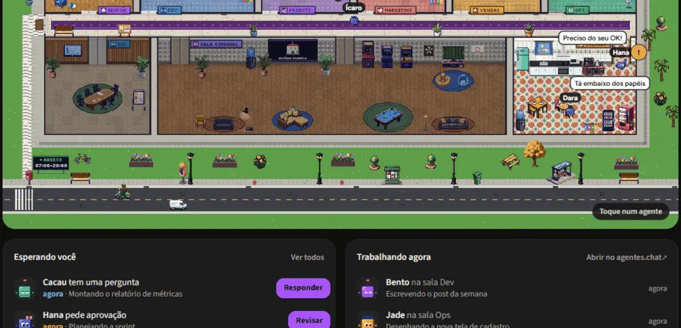
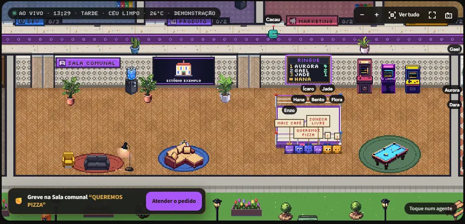
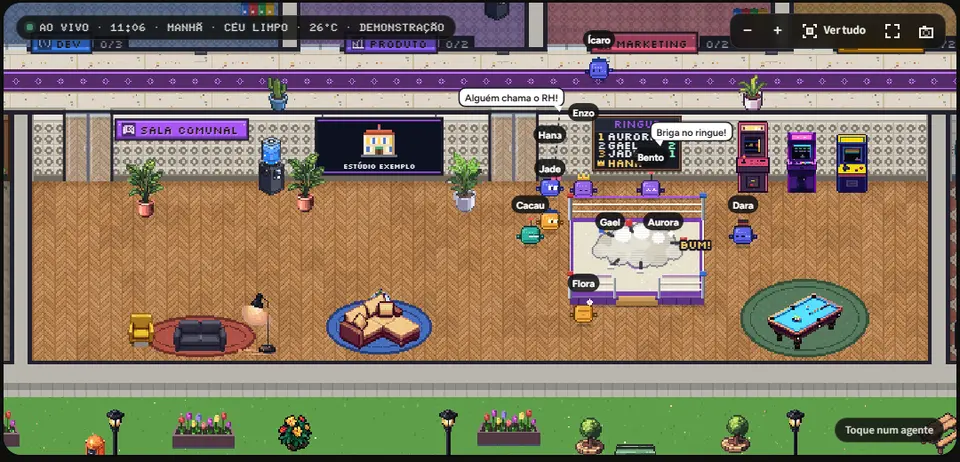
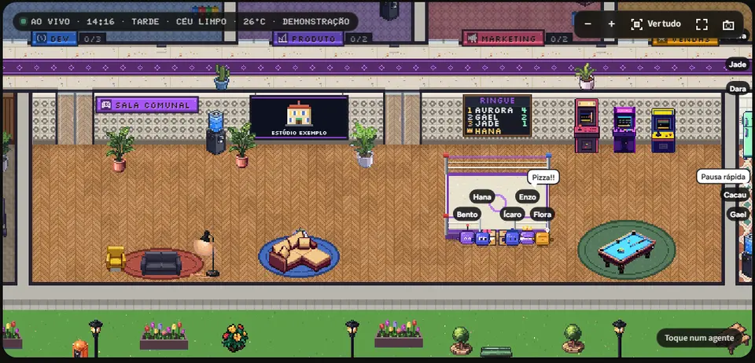
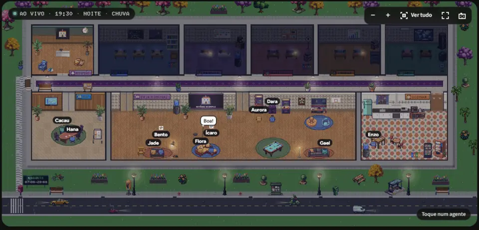
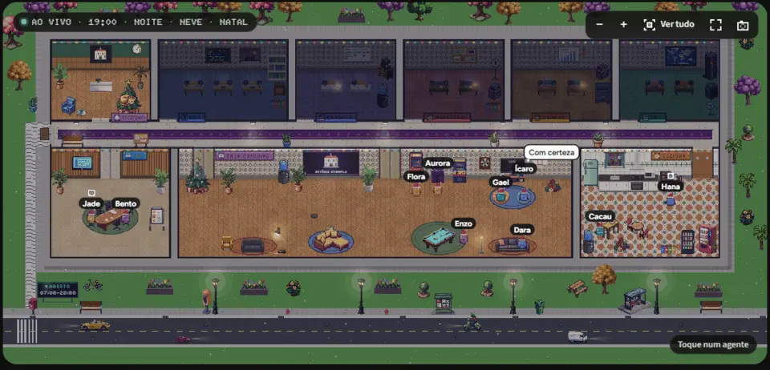
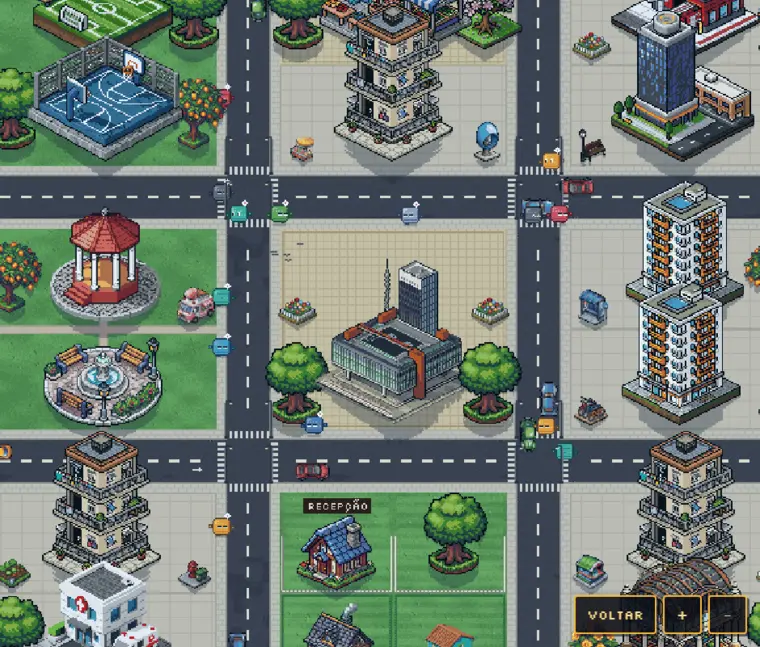

6Escritório
Cada agente na sua sala.
Trabalhando, esperando você ou de folga: a cor do crachá e o balão na cabeça contam. A cada 30 segundos o escritório lê o time de novo e os moradores andam até onde devem estar.

ao vivo · código aberto · zero token
A Firmópolis é um escritório em pixel art onde cada agente de IA vira um morador. Num relance você vê quem está na mesa, quem foi jogar sinuca e quem espera a sua aprovação.
Os terminais locais chegam com a ponte da Firmópolis, que lê cada agente na sua máquina sem chamar nenhum modelo.
Tour pelo prédio
6Escritório
Trabalhando, esperando você ou de folga: a cor do crachá e o balão na cabeça contam. A cada 30 segundos o escritório lê o time de novo e os moradores andam até onde devem estar.
5Esperando você
Pergunta ou aprovação pendente aparece com um ponto de interrogação em cima do agente e numa lista separada. Um clique leva até ele.

4Vida social
Greve na sala comunal com plaquinha de papelão, briga no ringue com plateia, pizza chegando de motoboy. Tudo nasce do que o time faz de verdade.



3Modo construção
Pinte as salas com 7 paredes e 10 pisos, arraste e espelhe os móveis e escolha entre 53 enfeites. Você arruma no computador e o time vê pronto no mapa.

2Clima e festas
A hora e o clima são os da sua cidade. Anoitece, as luzes acendem, e no Natal cai neve no jardim.


1O bairro
Cada workspace vira um andar, e os prédios formam um bairro num mapa do Brasil. Dá até para receber visita por convite na recepção.


TNo bolso
Instale como aplicativo e receba um aviso quando alguém do time precisar de você. O modo TV deixa o escritório rodando num monitor da parede.

Regimento interno
Nenhum modelo de IA é chamado para o escritório existir. Ele só lê o estado do time e desenha.
Por padrão, o escritório olha e não mexe. Responder pelo mapa é opcional e fica desligado até você ligar.
Roda no seu servidor, fechado na sua rede privada. Os dados do time não passam por nós.
AGPL-3.0, Python só com a biblioteca padrão e JavaScript puro. Sem build e sem caixa-preta.
Recepção
Você precisa de um Linux com systemd, Python 3.10 ou mais novo e o Tailscale com HTTPS ligado. No fim, o instalador mostra o código do primeiro acesso.
Prefere contêiner? Também tem Docker e Coolify.
Guia completo de instalação# baixe o código
git clone https://github.com/HelbertMoura/escritorio-agentes
cd escritorio-agentes
# instale com o id da sua organização
sudo AGENTES_ORG=<id> bash instalar.shCafezinho
Não. Ela só lê o estado dos agentes a cada 30 segundos e desenha o escritório. Nenhum modelo de IA é chamado para o escritório existir.
Nada. O código é aberto, sob a licença AGPL-3.0, e roda na sua própria máquina.
Hoje, com os agentes do agentes.chat. A ponte local, que vai ler os terminais do Maestri, do Claude Code, do Codex, do agy e do OpenCode, está chegando.
Não passam por nós. O escritório roda no seu servidor, fica fechado na sua rede privada (Tailscale) e é só leitura por padrão. Ele conversa com o agentes.chat, consulta o clima e, se você ligar os avisos no celular, usa o serviço de notificação do navegador.
Era. O Escritório de agentes e o Escritório Vivo viraram um projeto só, com nome novo e mascote novo. O código continua no mesmo repositório.